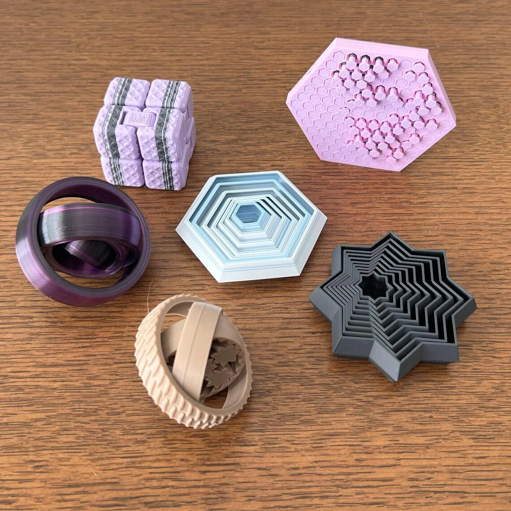
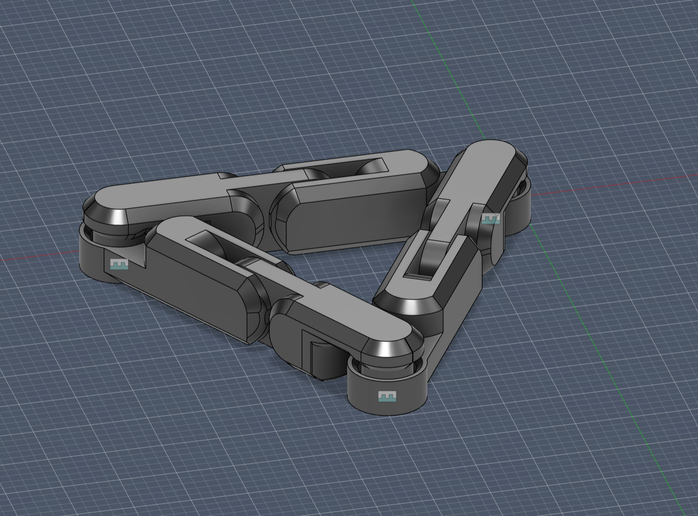
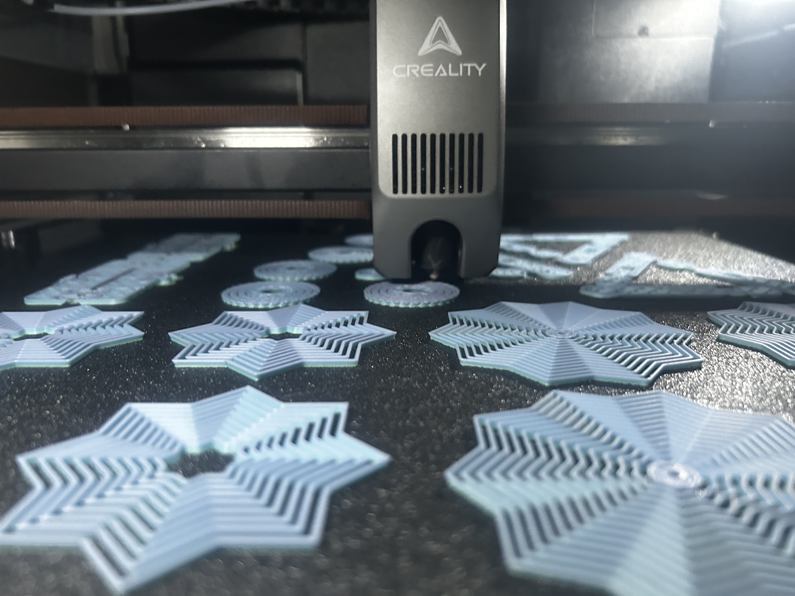

Design a 3D printed fidget toy that has moving parts and is fun to play with, make sure it is designed well enough to be printed in bulk and is durable enough to be used as a fidget toy.

Since the fidgets were for a chapter fundraiser, I researched what types of fidgets students our age would actually buy. Through classroom surveys and feedback from friends, I found that the most popular options were spinners, cubes, and fidget triangles. I was able to find most of the fidget toy designs for free online, so that part was easy. But we were missing a fidget triangle and a school mascot keychain, so I had to design those from scratch in CAD.

You’d think 3D-printing a fidget toy would be straightforward, but it actually took a lot of trial and error to get the designs right.
This ended up being one of the most iterative projects I’ve worked on, because even small design changes had a big impact on how well the
toy functioned. For example, the amount of surface area touching the print bed was critical; if there wasn’t enough, the print would fail,
too much the fitment was off. The tolerances also had to be dialed in for the moving parts, because if they were too tight, nothing moved,
and if they were too loose, it felt sloppy.
This design has two separate parts that fit together, and I had to iterate both pieces over and over to get the fit just right. The CAD work took a
lot of skill, and I used features like revolutions, chamfers, fillets, rigid joints, and many more. Honestly, bringing this to life from just
a picture online was hard. I had to come up with my own measurements, sizing, and overall dimensions.

In the end, I’m very proud of how the triangle and Viking keychain turned out. The fidget triangle actually came out better than the original picture, and the keychain was a fun way to show school spirit. We ended up selling around 70 fidgets total, and as of March 7, 2026, we’ve had 3 additional sales. We’re planning to make a few more sales before the end of the school year, then donate the remaining fidgets to elementary schools or the school reward program. If I did this again, I’d focus more on advertising and getting a card reader to increase sales, since almost nobody carries cash anymore. Overall, I’m really happy with how the fidgets turned out, and I learned a lot about 3D printing and CAD design through this project.